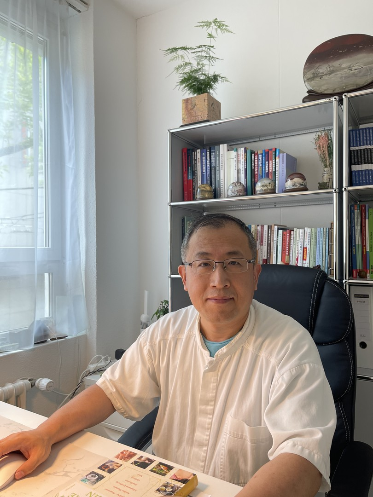

Professional Background
1990 – 1995
Studied at Guangzhou University of Traditional Chinese Medicine (China)
1995 – 2011
Physician at Shandong Gaomi TCM Hospital
2008
Advanced training in Tuina massage in Beijing
Dec 2011 – Feb 2019
Specialist at ChinaMed Center Zurich
Mar 2019
Founded TAI TCM GmbH
Languages
German, English, Chinese (Mandarin & Cantonese)
Recognised Qualifications
TCM specialities for the following conditions:
- Neurological conditions: migraine, headaches, dizziness, tinnitus, trigeminal neuralgia, post-stroke paralysis, urinary dysfunction, bladder weakness
- Orthopaedic conditions: low back pain, back pain, sciatica, neck–shoulder–arm syndrome, tennis elbow, arthritis, osteoarthritis, rheumatic conditions, Achilles tendon symptoms, heel pain
- Internal medicine: bronchitis, urinary tract infections, cardiac arrhythmia, hypertension, bloating, nausea, constipation, diarrhoea, digestive disorders, irritable bowel syndrome
- Gynaecological conditions: menstrual discomfort, pregnancy-related complaints, birth preparation, infertility, menopausal symptoms
- Mental health: depression, sleep disorders, burnout
- Allergy & skin: hay fever, asthma, acne, eczema, atopic dermatitis, psoriasis
- Other: smoking cessation, overweight, weakened immune system, supportive therapy before and after cancer/tumour surgery